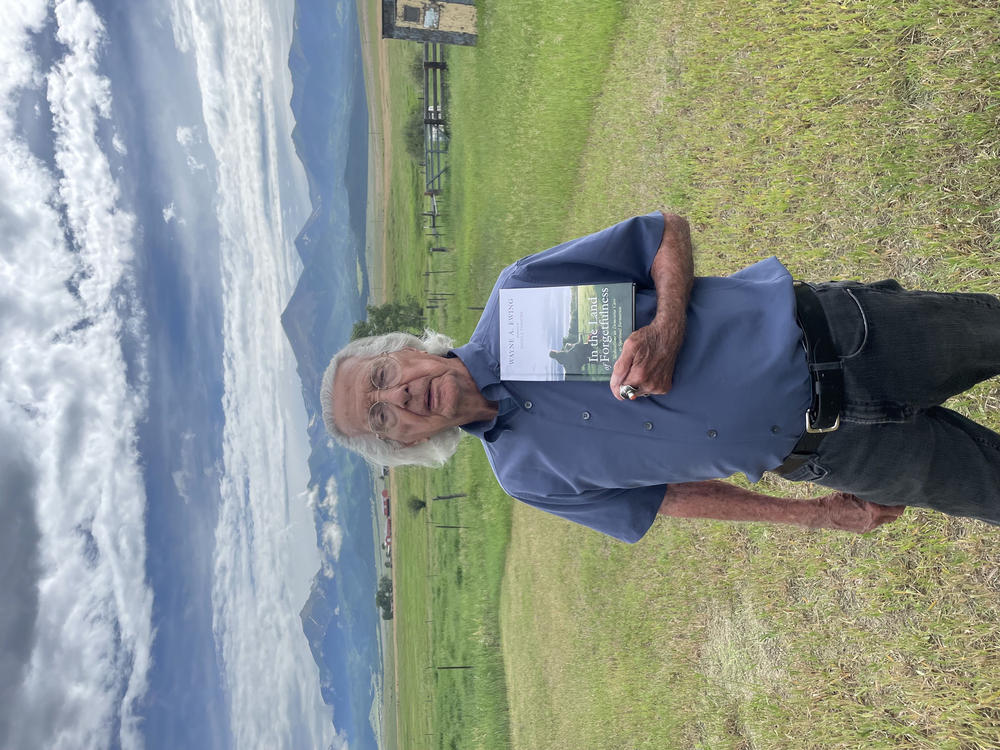
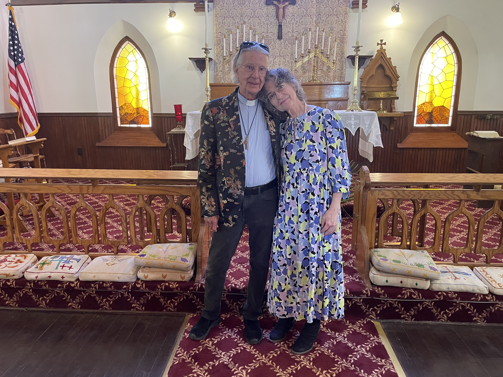
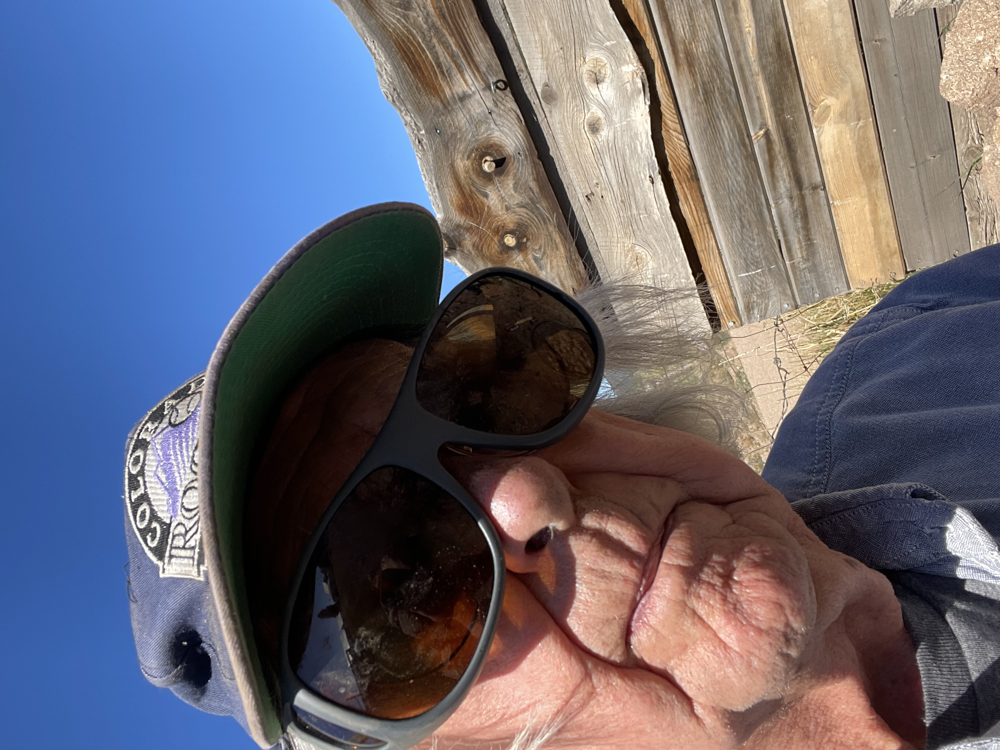
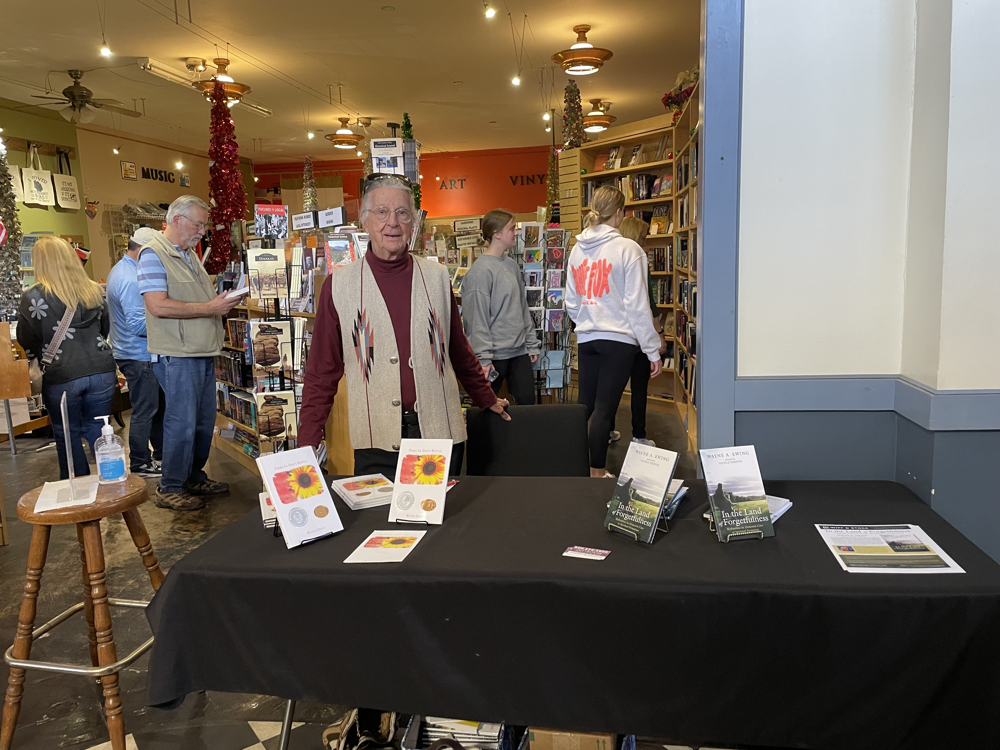
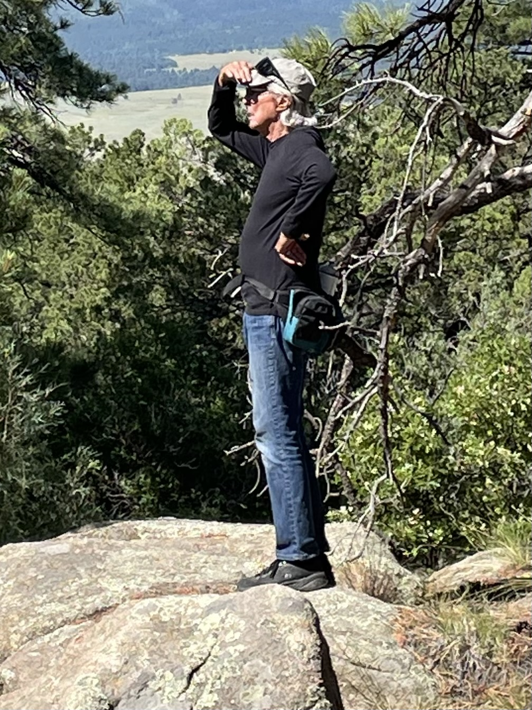
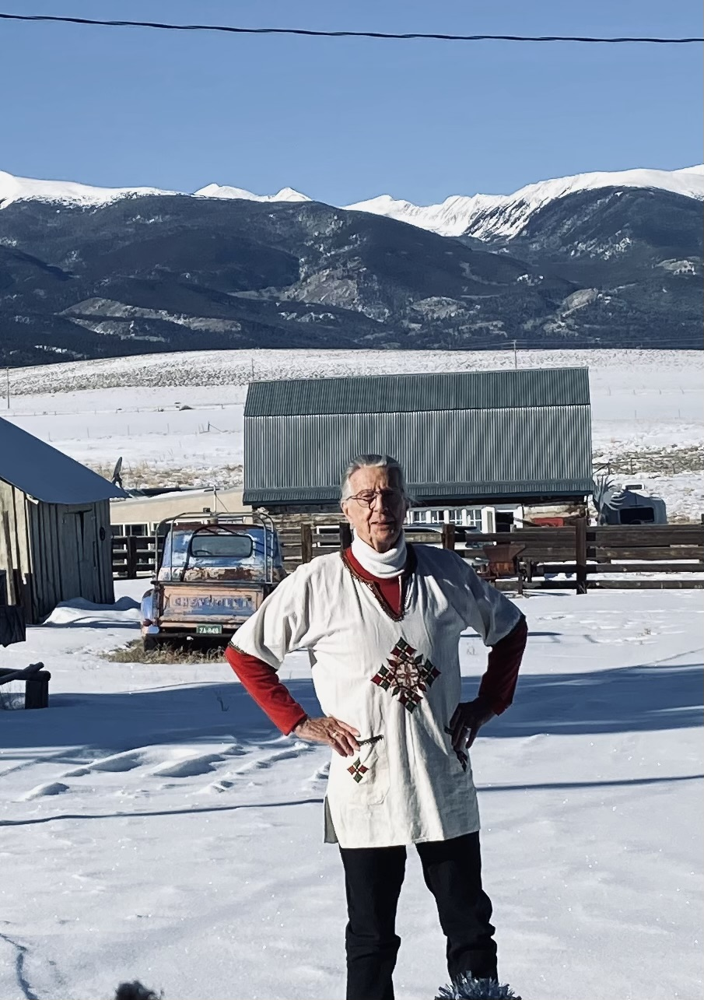
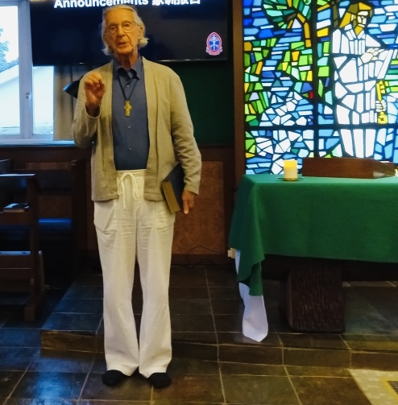
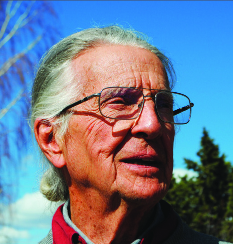

Writing from the Wet Mountain Valley of Colorado about caregiving, contemplation, and the meeting place between dementia care and spiritual growth.


Episcopal Priest · University and Seminary Professor · Staff Journalist
At 89, Wayne is a retired Episcopal priest, pastoral counselor, and academic who served as a full time caregiver for his late wife, Ann, through her five year journey with dementia. That season of his life became the foundation for his award winning books on caregiving and contemplative spirituality.
He now lives at his 150 year old ranch house in the Wet Mountain Valley of Custer County, Colorado, with his spouse Shannon and his 100-year-old father-in-law, Charles. He continues to write as a staff journalist for the Wet Mountain Tribune, one of the last independent, hyper local weekly newspapers in rural America.
Over the course of his career, Wayne has delivered countless homilies, taught at universities and seminaries, led keynote talks and seminars on the spiritual dimensions of dementia caregiving, and even performed as a Shakespearean actor.





Two books that explore dementia care partnering from overlooked resources: Biblical and the commentary of mystics and contemplatives. Wayne unwraps the uncanny parallel between the language used to describe dementia from the outside looking in, with the language mystics use to describe and counsel spiritual growth from the inside looking outward.
Second Place Book of the Year, ForeWord Magazine. Finalist, Benjamin Franklin Award. Multiple GLYPH Awards. Winner, Clara Award.
Written out of Wayne's five years as a full time caregiver for his late wife Ann, this book offers dementia caregivers, chaplains, and spiritual directors a companion for the journey, one that finds meaning in loss, presence, and unconditional love.
A continued exploration of contemplative spirituality within the caregiving experience, written for personal and professional caregivers, hospice chaplains, parish nurses, grief ministers, and seminary students seeking language for the sacred in memory loss.
A companion guide for both books, useful for book clubs, caregiver support groups, seminary classrooms, and grief ministries. Choose a book below to download its free discussion guide.
Wayne's next manuscript is currently underway, continuing his exploration of faith, memory, and the presence of the sacred in everyday life. Details will be shared here as they become available.
In ProgressRecorded in Wayne's voice against the backdrop of the Wet Mountain Valley, this short film offers a glimpse into the heart of the book.
I have read several books related to caregiving, but this one stands out because of its unique perspective and heartfelt writing. Wayne Ewing brings together personal reflection, spiritual insight, and practical understanding in a way that feels natural and authentic. I came away with a deeper appreciation for caregivers and a renewed sense of compassion for those living with dementia.
What I appreciated most about this book was its balance. The author does not ignore the hardships that come with dementia caregiving, but he also does not leave readers feeling discouraged. Instead, he offers a perspective that is realistic, compassionate, and filled with hope. The meditations encouraged me to slow down, reflect, and find meaning in experiences that often feel difficult to understand.
In the Land of Forgetfulness is a remarkably beautiful exploration of dementia caregiving, but what makes it truly special is the deeper question it asks about what remains when memory begins to disappear. Wayne A. Ewing approaches this difficult subject with extraordinary compassion and spiritual insight. His reflections encourage us to look beyond the obvious struggles and recognize the importance of presence, dignity, love, and connection. The parallels he draws between dementia and spiritual formation are fascinating and give the book a perspective I found both unexpected and deeply moving. This is a book that can touch caregivers, families, and spiritually curious readers in very different ways.
Wayne Ewing's religious perspective on his beloved wife's decline is very helpful in this difficult situation, so when our friend found out that her 53 year old husband was also fading, I quickly ordered this book. It has helped my sister cope with her husband's condition also. I highly recommend it.

Wayne is available for interviews, podcast appearances, keynote talks, and speaking engagements on dementia caregiving, contemplative spirituality, and pastoral theology. A professional headshot and full biography are available below for media use.
Whether you are a caregiver, chaplain, book club leader, or seminary program coordinator, Wayne welcomes your message and responds personally to every inquiry.